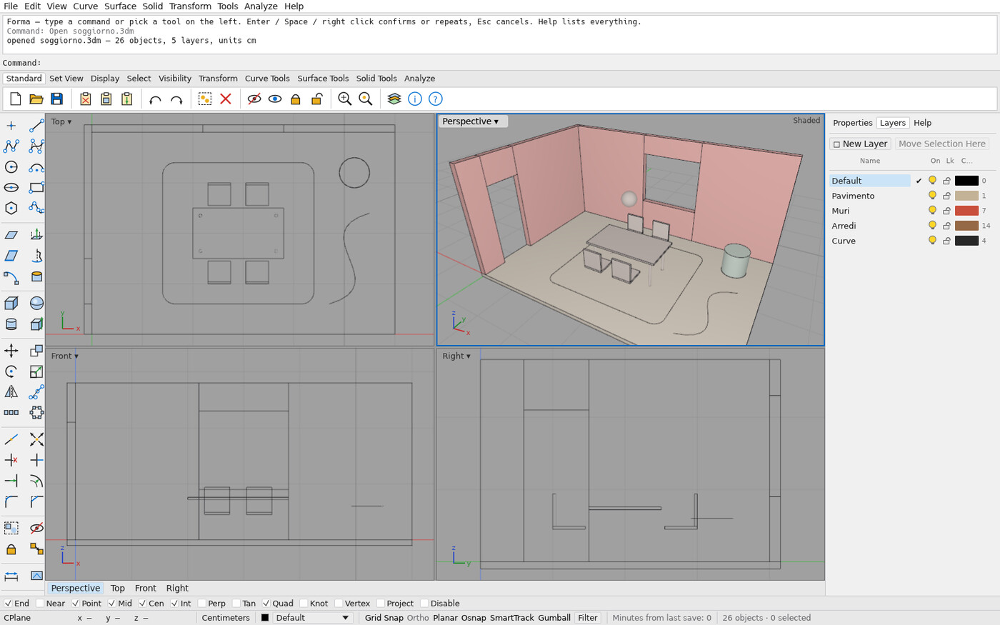
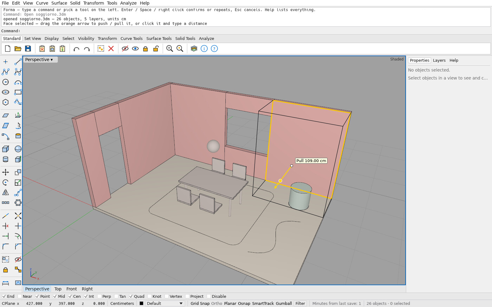
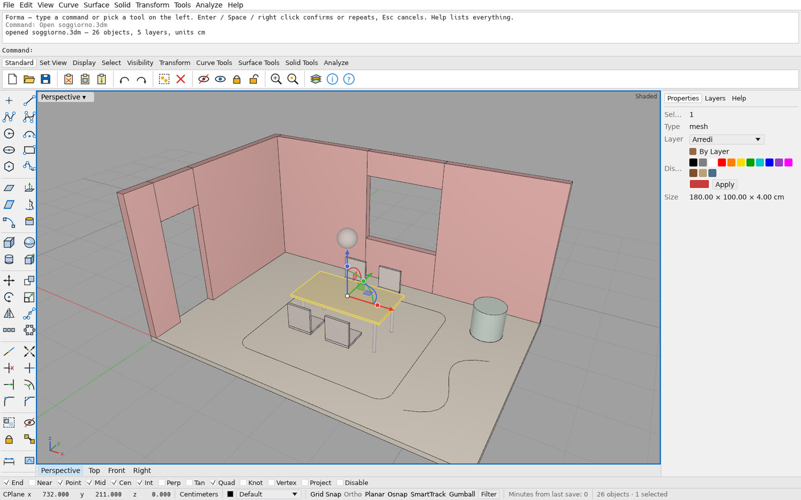
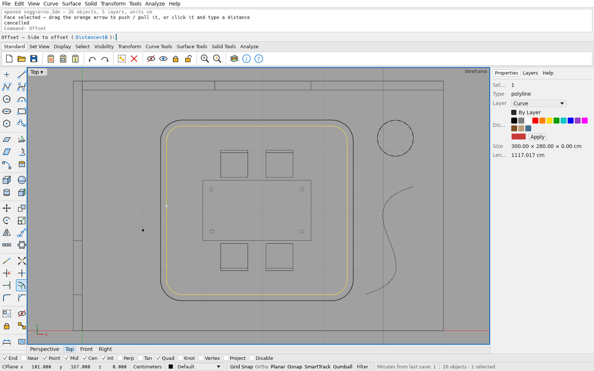
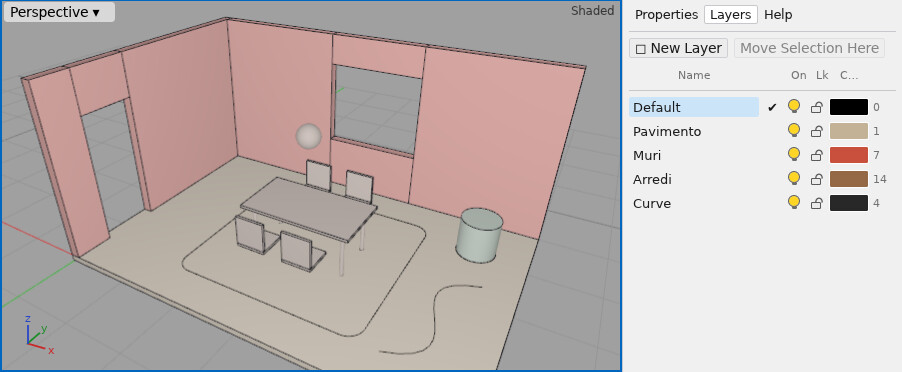

A Rhino-style 3D modeller for interior design. Un modellatore 3D in stile Rhino per l'interior design.
Type Box, Offset or Extrude, snap to what you see, push and pull faces with the gumball, organise layers and colours, and save .3dm files. Free, open source, written in Rust and built with AI agents.
Scrivi Box, Offset o Extrude, aggancia gli oggetti con gli osnap, spingi e tira le facce col gumball, organizza layer e colori e salva in .3dm. Gratuito, open source, scritto in Rust e costruito con agenti AI.
Latest release · Forma-windows.zip · Windows 10/11, 64-bit · no installer · MIT or Apache-2.0. Windows may show “Windows protected your PC”: click More info → Run anyway (the app is not code-signed). Install guide · all releases Ultima release · Forma-windows.zip · Windows 10/11 a 64 bit · nessuna installazione · MIT o Apache-2.0. Windows può mostrare “PC protetto da Windows”: clic su Ulteriori informazioni → Esegui comunque (l'app non è firmata). Guida all'installazione · tutte le release

Honest status (v0.6.0)Lo stato reale (v0.6.0)
Forma works for drawing rooms, furniture blocks and curves, and for exchanging .3dm files. Solids and surfaces are display meshes for now: exact solids, booleans and edge fillets arrive with the OpenCascade kernel, which is in progress. It is a personal project with one main user, so expect rough edges and keep backups.
Forma funziona per disegnare stanze, blocchi d'arredo e curve, e per scambiare file .3dm. Per ora solidi e superfici sono mesh di visualizzazione: solidi esatti, booleane e raccordi degli spigoli arriveranno con il kernel OpenCascade, in lavorazione. È un progetto personale con un utente principale: aspettati qualche spigolo e tieni dei backup.
What it doesCosa fa
Command line firstPrima la riga di comando
About 90 commands with familiar names and short aliases, autocomplete, history and clickable options.Circa 90 comandi con nomi familiari e alias brevi, autocompletamento, storico e opzioni cliccabili.
Precise drawingDisegno preciso
11 object snaps, grid snap, Ortho, SmartTrack, typed coordinates and live measurements in centimetres.11 osnap, snap alla griglia, Ortho, SmartTrack, coordinate da tastiera e misure in tempo reale in centimetri.
Gumball and push / pullGumball e push / pull
Move, rotate and extrude with the gumball; Ctrl+Shift+click a face to push or pull it.Sposta, ruota ed estrudi col gumball; Ctrl+Maiusc+clic su una faccia per spingerla o tirarla.
Curve toolsStrumenti per le curve
Offset, Trim, Split, Extend, Fillet, Chamfer, Join, NURBS curves, arrays.Offset, Trim, Split, Extend, Fillet, Chamfer, Join, curve NURBS, serie.
Layers and coloursLayer e colori
Nested layers with colour, visibility and lock; per-object colours; groups, hide, isolate.Layer annidati con colore, visibilità e blocco; colori per oggetto; gruppi, nascondi, isola.
.3dm filesFile .3dm
Open and save Rhino files through openNURBS. Curves are saved exactly; solids as meshes.Apre e salva file Rhino tramite openNURBS. Le curve sono salvate esatte, i solidi come mesh.
ScreenshotsImmagini




Get startedPer iniziare
1 · DownloadScarica
Get Forma-windows.zip from the latest release, extract it, double-click forma.exe.Scarica Forma-windows.zip dall'ultima release, estrailo e fai doppio clic su forma.exe.
2 · Model a roomModella una stanza
Follow the 10-minute tutorial: walls, floor, push / pull, gumball, layers.Segui il tutorial di 10 minuti: muri, pavimento, push / pull, gumball, layer.
3 · Save as .3dmSalva in .3dm
Ctrl+S writes a standard .3dm file with your layers, colours and units in centimetres.Ctrl+S scrive un file .3dm standard con layer, colori e unità in centimetri.
More: README · changelog · roadmap · report a problem Altro: README in italiano · changelog · roadmap · segnala un problema
How it is madeCome è fatto
Forma is a personal project by Filippo Antonio Visentin, an interior design student at the Politecnico di Milano. Almost all of the code is written by AI coding agents, with Filippo as architect, reviewer and user. The agents work under written rules (CLAUDE.md): every action is a command, every command has tests, and nothing ships until the CI gate is green on Linux and Windows. Forma è un progetto personale di Filippo Antonio Visentin, studente di Interior Design al Politecnico di Milano. Quasi tutto il codice è scritto da agenti AI, con Filippo come architetto, revisore e utente. Gli agenti seguono regole scritte (CLAUDE.md): ogni azione è un comando, ogni comando ha i suoi test e nulla esce finché i controlli automatici non sono verdi su Linux e Windows.